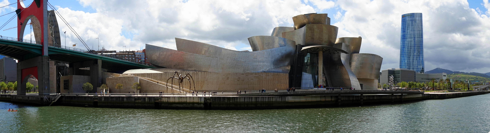

Museo Guggenheim
Informacion y caracteristicas
El Museo Guggenheim Bilbao (en euskera, Guggenheim Bilbao Museoa; en inglés, Guggenheim Museum Bilbao) es un museo de arte contemporáneo diseñado por el arquitecto canadiense Frank O.Gehry y localizado en la villa de Bilbao (País Vasco), España.Es uno de los museos pertenecientes a la Fundación Solomon R. Guggenheim. Fue inaugurado el 18 de octubre de 1997 por el rey Juan Carlos I de España.
Las negociaciones para la construcción del museo entre las autoridades públicas de la comunidad autónoma del País Vasco y los directivos de la Fundación Guggenheim comenzaron en febrero de 1991. El acuerdo se firmó a finales de ese año, seleccionándose el arquitecto y el emplazamiento del edificio a mediados de 1992. Desde su inauguración en 1997, el museo ha recibido una media superior al millón de visitantes anuales, causando un impacto extraordinario en la economía y la sociedad vasca, impulsando el turismo en la región y promoviendo la revitalización de múltiples espacios públicos y privados en la villa, Además de mejorar la imagen de la ciudad.
La característica más llamativa del museo es el innovador edificio en el que se emplaza, constituido por formas curvilíneas y retorcidas, recubiertas de piedra caliza, cortinas de cristal y planchas de titanio. Cuenta con una superficie total de 24.000m2, de los cuales 10.540m2 están reservados para las exposiciones, distribuidos en 19 galerías, siendo el museo con más metros expositivos del Estado. Se ubica a orillas de la ría de Bilbao, en una zona denominada Abandoibarra, junto al puente de La Salve, que está rodeado por una torre hueca.
El 3 de diciembre de 2014 el patronato del Museo Guggenheim Bilbao aprobó renovar por otros 20 años la colaboración con la Fundación Solomon R. Guggenheim de Nueva York, suscrita en 1994 y cuya vigencia vencía el 31 de diciembre.
Durante el mes de octubre de 2017 y hasta el día 18, fecha de inauguración de la pinacoteca, el museo celebró su XX aniversario con diversas actividades.
Arquitectura
Diseñado por el gabinete de arquitectos de Frank Gehry, fue abierto al público en 1997 y alberga exposiciones de arte de obras pertenecientes a la fundación Guggenheim y exposiciones itinerantes. Muy pronto el edificio se reveló como uno de los más espectaculares edificios deconstructivistas. El diseño del museo y su construcción siguen el estilo y métodos de Frank Gehry. Como muchos de sus trabajos anteriores la estructura principal está radicalmente esculpida siguiendo contornos casi orgánicos. El museo afirma no contener una sola superficie plana en toda su estructura. Parte del edificio es cruzado por un puente elevado y el exterior está recubierto por placas de titanio y por una piedra caliza que fue muy difícil de encontrar (al final se logró encontrar en Huéscar, Granada) de un color similar a la que se utilizó para construir la Universidad de Deusto.
El edificio visto desde el río aparenta tener la forma de un barco rindiendo homenaje a la ciudad portuaria en la que se inscribe. Sus paneles brillantes se asemejan a las escamas de un pez recordándonos las influencias de formas orgánicas presentes en muchos de los trabajos de Gehry. Visto desde arriba, sin embargo, el edificio posee la forma de una flor. Para su diseño el equipo de Gehry utilizó intensamente simulaciones por ordenador de las estructuras necesarias para mantener el edificio, consiguiendo unas formas que hubieran sido imposibles de realizar unas pocas décadas antes.
Mientras que el museo domina las vistas de la zona desde el nivel del río su aspecto desde el nivel superior de la calle es mucho más modesto por lo que no desentona con su entorno de edificios más tradicionales.
Video y fotos


Horario y precios
Abierto de martes a domingo 10:00 – 20:00h
Lunes cerrado excepto los días: 18 de marzo, 15 y 22 de abril, todos los lunes de julio y agosto, 2 y 9 de septiembre y 23 y 30 de diciembre de 2019.
El Museo permanecerá cerrado los días 25 de diciembre y 1 de enero. Los días 24 y 31 de diciembre el Museo cerrará sus puertas a las 17h. La taquilla cierra media hora antes del cierre del Museo. El desalojo de las salas se inicia 15 minutos antes del cierre del Museo.
| Adultos | 13€ |
|---|---|
| Grupos>20 | 12€ |
| Jubilados | 7.50€ |
| estudiantes < 26años |
MENÚ
-
Página principal
-
Lugares de interés
-
Danos tu opinión
-
Otras páginas web:
-
Contacto